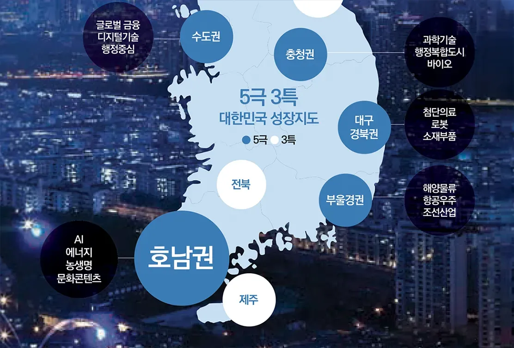
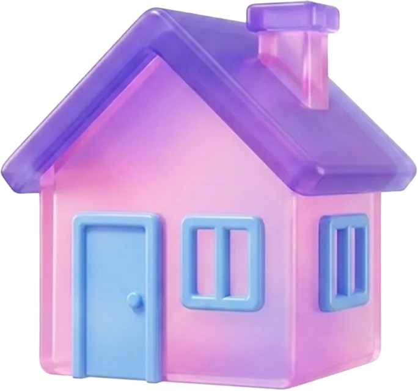
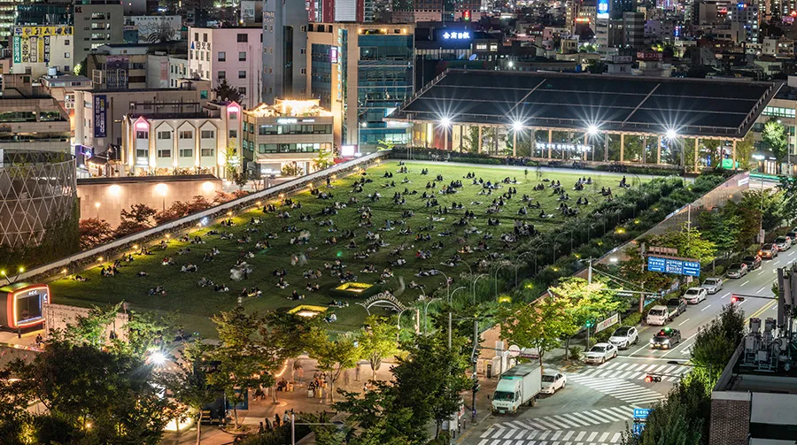

7월 1일, 우리는 모두 특별시민이 됩니다.
내 일상과 직접 맞닿은 변화부터 궁금했던 질문까지,
전남광주통합특별시 특별법을
Q&A로 쉽게 풀어드려요.
언제, 무엇이, 왜 바뀔까?
새 이름은 ‘전남광주통합특별시’예요. 약칭은 ‘광주특별시’랍니다. [특별법 제7조①]
제7조 전남광주통합특별시의 설치
출처 : 매거진G 2026년 봄호 (공공정책위키 한겨레)
특별법 제1조에서는 전남광주통합특별시의 탄생 이유를 이렇게 정의하고 있어요.
- 수도권 일극 체제·지방소멸 위기 해소
- AI·에너지·반도체 첨단산업 육성과 농어업의 조화로운 발전
- 실질적 지방분권과 국가균형성장
그리고 그 바탕엔 5·18민주화운동과 민주·인권·정의·평화의 광주정신, 대동정신이 있답니다.
제1조 자세히 보기일상에 어떤 변화가?

네. 전남광주통합특별시(약칭 광주특별시)로 공식적인 행정구역 명칭이 변경된 것이기 때문에 주소 표기 방식에도 변화가 생길 예정이에요.
기존의 ‘광주광역시 OO구’ 또는 ‘전라남도 OO군’으로 시작하던 주소가 ‘전남광주통합특별시 OO구’ 또는 ‘전남광주통합특별시 OO군’으로 바뀌게 되는 것이죠. 주소의 가장 앞부분인 ‘시·도’ 단위가 ‘전남광주통합특별시’로 바뀐다고 생각하시면 돼요.
아닙니다. 통합특별시 관할구역에 시·군·구를 그대로 둘 수 있으며, 명칭과 관할구역도 이전과 같아요.
제9조 시·군·구 등에 관한 특례지역번호 통합에는 막대한 사회적 비용이 발생해요. 주민 불편과 사회적 비용을 최소화하기 위해 현행 061(전남)과 062(광주) 체제를 유지합니다.
우편번호는 그대로 유지됩니다! 우편번호는 행정안전부의 ‘국가기초구역번호’를 기준으로 부여해요. 행정통합은 기초지방자치단체의 관할 구역이 현행 그대로 유지되기 때문에, 구역 기반인 국가기초구역번호의 변경 사유가 없어 현재 우편번호는 그대로 유지됩니다.
아직 결정된 것은 없지만 통합특별시 출범 이후 순차적으로 협약을 진행할 예정입니다. 다만 KIA타이거즈, 전남 드래곤즈는 민간기업이라 전남광주특별시로 바뀌었다고 해도 특별히 달라지는 부분은 없습니다.
AI페퍼스도 민간기업에서 운영하고 있어 마찬가지로 특별시 전환에 따라 달라지는 부분은 없습니다. 다만 현재 연고지 협상은 진행 중에 있다는 사실! 광주시민구단인 광주FC의 경우 통합에 따라 정식 명칭에는 변화가 있을 수 있으며, 약칭으로 ‘광주FC’를 유지할 가능성도 있어요.
전남광주통합특별시준비위원회에서 영문 명칭을 ‘Jeonnam-Gwangju Special Metropolitan City’로 논의 중이지만, 아직 더 검토가 필요한 단계입니다. 확정 표기는 자치법규 정비 과정에서 최종 결정될 예정이에요. 누리집 도메인은 지난 4월 선호도 조사를 거쳐 jngj.go.kr로 정해졌습니다.
기존 신분증 사용이 가능합니다. 신분증 재발급은 필수가 아니에요. 통합 이후 신분증 재발급을 원하신다면 가까운 동사무소에서 발급받으세요.
이런 게 걱정돼요!
걱정마세요! 이 역시 특별법이 보장하고 있어요. 한국 민주주의 발전에 기여한 역사적 가치와 ‘아시아문화중심도시’ 브랜드 정체성을 계승·발전시키는 정책은 필수랍니다.
제5조 통합특별시의 책무자치역량 불균형에 대해서도 대비하고 있습니다. 특별법에 따르면 통합특별시장은 자치권 강화 방안을 의무적으로 마련·시행해야 합니다. 옛 광주광역시 자치구의 행정·재정 자치권한을 확대·조정하고, 도시계획 입안권과 과세권, 조직 운영 자율성 강화 방안 등을 포함해요.
제10조 시·군·구의 지위 및 권한 특례현재 결정된 사항은 없습니다. 시청사 소재지는 법령에 따른 절차와 시·도민의 합의를 거쳐 객관적인 기준으로 선정될 예정이에요.
일단 시청사는 청사 이전에 따른 혼란 방지를 위해 기존 청사를 활용할 예정인데요, 특별법에 특별시의 청사는 전남 동부, 무안, 광주 청사를 균형있게 운영한다고 명시되어 있어요.
기존 구청과 군청은 그대로 존재하게 되고, 또 디지털 행정 시스템 통합으로 관내 모든 민원실에서 원스톱으로 서비스를 받을 수 있기 때문에 행정의 중복성이 제거되어 처리 속도가 빨라질 것으로 기대하고 있어요.
행정기관이 통합된다고 해서 민원을 보러 멀리 이동해야 하는 일은 없습니다. 오히려 전산 시스템이 통합되어 주소지 구분 없이 행정 서비스를 이용할 수 있는 범위가 넓어진답니다.
혜택도 통합되나요?

통합 광역 단체 차원에서 권역별 문화·예술 거점을 재배치하고, 공공시설 이용료 할인이나 운영 체계를 단일화하여 지역 간 문화 격차를 해소하는 데 주력할 것이기 때문에 기대하셔도 좋아요!
더 좋아질 수 있는 가능성이 열렸습니다. 특별법에 그 근거가 마련됐기 때문이에요. 특별법에는 중증·응급·분만·소아·정신 의료 같은 필수 진료를 다른 지역까지 나가지 않고 우리 지역 안에서 받을 수 있는 체계를 만들겠다고 되어 있습니다.
국가와 통합특별시가 병원을 짓거나 의료인력을 늘리는 비용을 함께 부담하고, 병원이 부족한 지역을 먼저 챙기고 의사가 지역에 더 머물 수 있도록 돕는 지원도 가능하고요. 통합 전에 광주와 전남에서 받았던 의료지원도 줄거나 중단되지 않도록 했습니다.
의료서비스가 개선될 수 있도록 국가와 통합특별시가 재정과 인력을 집중투입할 수 있는 법적 근거와 의무 방향이 마련됐다는 점에서 우선 의미가 있습니다.
제324조 공공의료 인프라 확충 특례기대해 봐도 좋을 것 같아요. 일자리를 만들어 낼 ‘산업기반’을 특별법에 빼곡히 담아뒀기 때문이에요. AI·반도체·에너지 같은 미래 산업을 키우고, 그 안에서 특히 청년 일자리가 생기도록 설계되어 있어요.
① AI 분야 법적 근거
② 반도체와 에너지 분야 법적 근거
또 전남광주통합특별시가 ‘청년이 머무는 도시’가 될 수 있도록 진흥기금·발전기금부터 청년특화구역, 고졸자 고용촉진까지 특별법으로 든든하게 지원할 예정이랍니다.
고향사랑기부제는 6.26~6.30일까지 기부가 잠시 중단됩니다. 쉽게 예를 들어 볼게요! 고향사랑기부제는 본인 주소지를 제외한 다른 곳에만 기부가 가능하다는 것 알고 계시죠? 만약 내가 광주광역시 북구에 살고 있다면?
- 통합 이전
· 광주광역시청·북구청은 기부 불가
· 북구청을 제외한 광주광역시 구청과 전라남도 도청 및 시·군은 기부 가능 - 통합 이후
· 전남광주통합특별시청·북구청은 기부 불가
· 본인 주소지를 제외한 전남광주통합특별시 내 다른 시·군·구는 기부 가능 - ※ 통합 이후엔 본인 주소지를 제외한 전남광주통합특별시 내 다른 시군구 기부 가능
세금은 오르고 지원은 줄어들까요?
걱정하지 마세요. 통합을 이유로 종전에 누리던 행정·재정상 이익이 사라지거나 주민에게 새로운 부담이 추가되어서는 안 된다는 “불이익 배제 원칙”이 특별법에 명문화되어 있거든요!
자동차세와 주민세 모두 지방세에요. 자동차의 소재지나 본인의 주소를 기준으로 결정되기 때문에 통합 후에도 기본 원칙은 동일합니다.
특별법 제55조(불이익 배제의 원칙)에 따르면 ‘통합으로 인하여 종전에 누리던 행정상·재정상 이익이 상실되거나 지역주민에게 새로운 부담이 추가되어서는 아니 된다’고 규정하고 있어요. 따라서 행정통합이 이루어져도 통합을 이유로 주거급여 등 기존 복지급여가 줄어들거나 새로운 부담이 생기지는 않습니다.
제55조 불이익 배제의 원칙현재 부처 보조금의 교부, 집행, 정산 방식이 변경된다는 내용은 결정된 바가 없어요. 제도 변경이 추진될 경우 내부 지침을 마련해 공식적으로 안내할 예정입니다. 오히려 통합특별시가 출범하면 ‘특별시’ 지위에서 보조금을 받을 수 있는 기회가 더 늘어날 수 있습니다.
지역별로 지원 정책이 다른 전기차 보조금, 상생카드(지역화폐) 등은 기존의 조건과 동일하게 지원합니다. 다만 추후 정책결정에 따라 변화가 있을 수도 있어요.
기대가 큰 만큼 궁금한 것도 많은 전남광주통합특별시의 모든 것!
전남광주통합특별시에 대해 더 궁금한 것이 있다면,
행정통합 Q&A 누리집 질의응답 게시판을 이용해
주세요!
시민들이 바라는 광주전남행정통합은?
전남광주통합특별시를 향한 시민들의 생생한 목소리, 매거진G 특별시민편에서 만나보세요!
매거진G 특별시민편 보러가기새로운 이름, 더 넓어진 가능성!